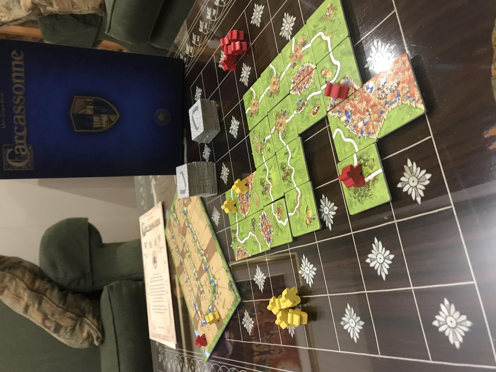

Carcassone: un jeu simple et stratégique

Carcassonne est un jeu de société dont le but est de faire le plus de points dans un montant limité de temps. À chaque tour, on prend une tuile de paysage et on l’ajoute à l’ensemble déjà placé pour maximiser nos propres points et prévenir nos adversaires de faire de même. Le jeu se termine lorsque toutes les tuiles sont utilisées. Des points se font donner pour la complétion de ville, routes et abbaye. Les villes et les routes gagnent des points pour leur grandeur quand ils sont complétés ou quand le jeu se termine. Les abbayes gagnent des points pour chaque tuile qui l’entourent. Pour collecter des points des différentes structures assemblées, il faut en premier en avoir contrôle avec un jeton. Quand on a un jeton, personne d’autre ne peut en placer sur la même structure, mais on peut placer des pions sur des tuiles adjacentes et les connecter ensemble plus tard pour prendre les points de l’autre.
Un des grands avantages du jeu Carcassonne est sa simplicité. Il ne prend pas très longtemps à montrer à quelqu’un comment jouer un tour: prendre une tuile au hasard et l’ajouter au plateau de jeu. Même ma mère, qui n’apprécie pas souvent les jeux de société, a pu comprendre et apprécié ce jeu. Cependant, même si le jeu est simple, il existe beaucoup de stratégie reliée aux choix qui sont pris à chaque tour. Par exemple, on peut placer nos tuiles de façon à ce que l’adversaire ait une plus grande difficulté à compléter ses routes ou ses villes. On peut aussi placer certaines tuiles aux endroits où nos adversaires ont déjà commencé à construire pour pouvoir garantir une plus grande somme de points, puisque l’adversaire va vouloir continuer à construire ces structures.
En plus de sa simplicité, le jeu offre plusieurs opportunités à se faire rejouer. À cause qu’à chaque jeu, on mélange les tuiles et on les pige au hasard, le plateau de jeu ne va jamais ressembler à un autre plateau qu’on a déjà vu et nos choix à chaque tour vont toujours être uniques. De plus, le jeu de base arrive avec des règles supplémentaires que l’on peut ajouter après notre première partie. Par exemple, les pâturages qui donnent des points pour toutes les villes complétées qui sont présentes. Il y a aussi la rivière qui représente une différente façon de commencer le jeu.
Un autre élément qui rend ce jeu encore meilleur est sa longueur de partie. Puisque la longueur du jeu est directement reliée aux tuiles qu’on joue et qu’on joue une tuile à chaque tour, le jeu ne prendra qu’un certain montant spécifique de tour à chaque fois. Avoir une fin très bien définie et qui est assuré de se passer dans un montant de temps précis est essentiel pour un bon jeu, puisqu’on ne veut pas devoir terminer un jeu avant sa fin officielle juste parce qu’on n’a plus de temps pour jouer ou on n’est plus investi dans la partie. Monopoly est un tel jeu qui ne donne aucun garantie pour sa fin ou sa longueur de partie.
Si on trouve le jeu trop simple, on peut aussi acheter une de plusieurs différentes expansions offertes pour le jeu. Ceux-ci ajoutent plus de mécaniques avec lesquels on peut interagir et ajoute différents thèmes, comme l’expansion dragon et princesse.
Pour conclure, Carcassonne est un jeu très simple et accessible pour n’importe qui et qui a une très grande profondeur dans ses mécaniques, le rendant très stimulant. Je recommanderais que n’import qui aime les jeux de société joue au moins une partie de ce jeu.